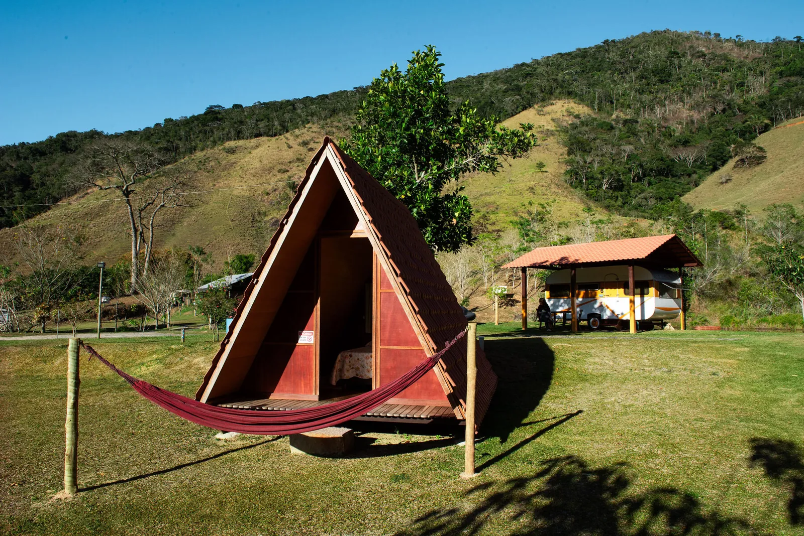
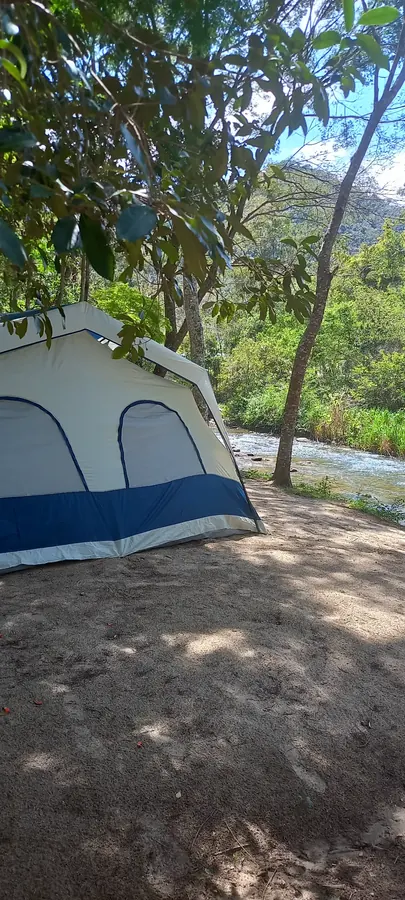
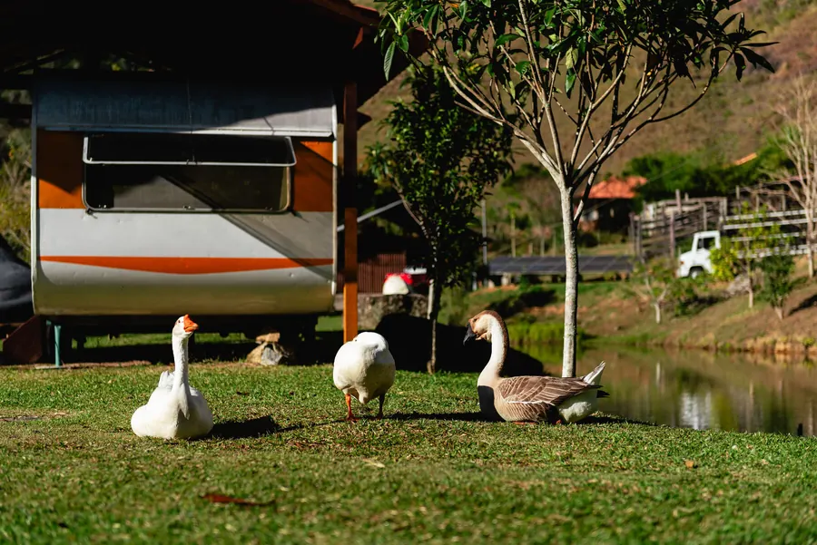
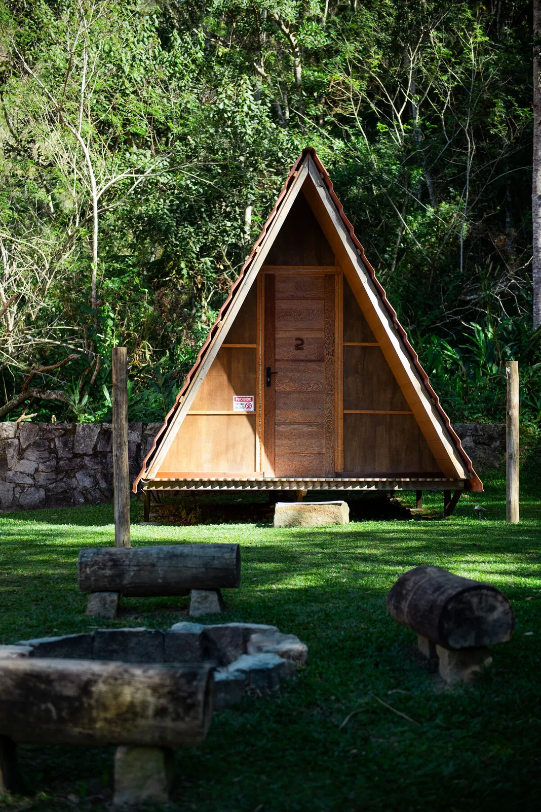
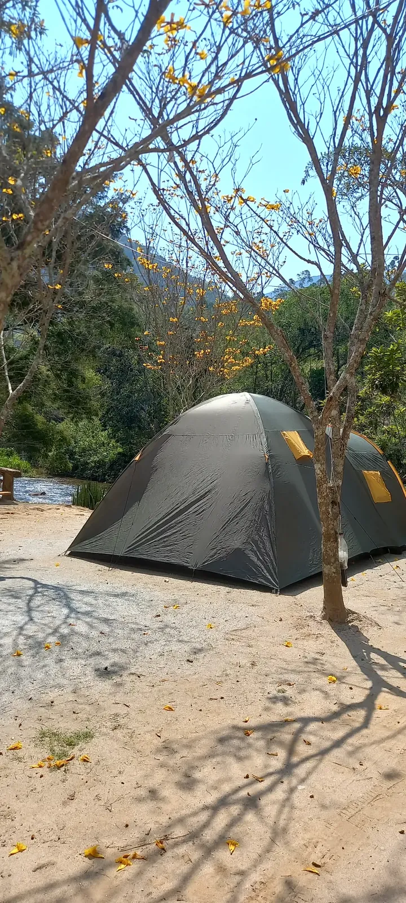

Lumiar
A ~700 m de altitude, banhado pelo Rio Macaé e cercado pela Mata Atlântica. Destino perfeito para quem busca tranquilidade, cachoeiras e trilhas.
- Cachoeiras e trilhas ecológicas
- Encontro dos Rios Macaé e Bonito
- Mata Atlântica preservada
Chalés, suíte, trailer e camping à beira do Rio Macaé, no coração da Mata Atlântica da Serra Fluminense. Natureza de verdade, silêncio de verdade e hospitalidade de família.



Em Lumiar, banhado pelo Rio Macaé e cercado pela Serra Verde Imperial, o Cantinho Doce é mais que uma hospedagem. É onde você deixa a cidade para trás e encontra o que realmente importa: o som da água, o cheiro do mato, o céu estrelado e a paz de um lugar que ainda é verdadeiro.
“Não vendemos quartos. Oferecemos experiências.”
O Rio Macaé passa ao lado da propriedade. Acorde com o som da água e durma com o canto dos grilos.
A Pedra Riscada e a Serra Verde Imperial emolduram cada amanhecer. Natureza preservada em todos os cantos.
Desde 2012 a Renata e o Valdinei recebem cada hóspede como parte da família. Cada detalhe é pensado com carinho.
Ambiente familiar, sem som alto e sem visitantes. Só o barulho do rio, do vento e da fogueira.
Cada operação tem seu próprio charme, suas regras e seu jeito de reservar. As duas dividem o mesmo rio, o mesmo céu e a mesma hospitalidade.

Seis tipos de acomodação com cama de verdade, churrasqueira, Wi-Fi de fibra e aquele conforto que combina com serra.

Quinze vagas no gramado, o Rio Macaé do lado, fogueira à noite e um céu que a cidade esqueceu.
Chalezinhos A-frame, chalés privativos, suíte beira-rio, trailer glamping e uma casa inteira para a turma. Clique em cada uma para ver todas as fotos, comodidades e valores.
Quinze vagas à beira do Rio Macaé com a essência do camping: fogueira, céu estrelado, som da natureza e a simplicidade que faz bem. Cozinha e banheiros compartilhados sempre limpos, churrasqueira nova na beira do rio e o silêncio que só a montanha oferece.
Um pouco do que espera por você: rio, serra, chalés, gansos, fogueira e muito verde.
A cerca de 150 km do Rio de Janeiro, Lumiar é o distrito de Nova Friburgo das cachoeiras, das trilhas e do Rio Macaé. Ficamos a poucos minutos do centrinho, de onde saem os acessos.
A ~700 m de altitude, banhado pelo Rio Macaé e cercado pela Mata Atlântica. Destino perfeito para quem busca tranquilidade, cachoeiras e trilhas.
Cafeterias charmosas, festivais culturais e atmosfera boêmia. O Festival de Outono é um dos destaques do calendário local.
Experiência gastronômica com restaurantes típicos e vistas panorâmicas da serra. Roteiro imperdível para quem ama boa comida.
O polo de lingerie e moda fitness de Nova Friburgo: compras com preço de fábrica e infraestrutura comercial completa.
Hospitalidade da Renata e do Valdinei, limpeza, silêncio e o rio: é o que mais aparece nas avaliações, ano após ano.
528 avaliações de hóspedes no Google. Leia todas e deixe a sua depois da visita.
Ver avaliações no GooglePassei carnaval aí, que camping maravilhoso e organizado! Enquanto estavam fazendo reclamações de outros campings, o Cantinho Doce estava sossegado e tudo muito limpo! Eu e meus amigos amamos. Super indico!
Lugar mágico em Lumiar. Voltamos todo ano: a Renata e o Valdinei recebem como família.
Respirando ar puro e dormindo sob a cantoria das criaturas da noite. Vale muito a pena! Outro ponto a destacar é a simpatia da Sra. Renata.
Ambiente familiar, organização e muita paz!
É um lugar que aflora nossas emoções! Estimula a sensação de paz e traz à tona aquele sentimento de tranquilidade. Nada se compara ao prazer de montar uma aconchegante barraca.
Tudo isso é temperado com a hospitalidade da Renata e do Valdinei, atentos a tudo e a todos.
Super indicado. Estive várias vezes, maravilhoso!
O camping é bem organizado, limpo.
Reserva direta, sem intermediários e sem taxas. A Pousada e o Camping Club têm sistemas diferentes: escolha a operação certa para garantir sua vaga.
Chalezinhos, chalés, suíte, trailer e Casa do Camping com reserva online segura, pagamento via PIX ou cartão e confirmação imediata no WhatsApp.
Quinze vagas públicas à beira do rio. Reserva direta, atendimento humanizado e confirmação rápida. Pagamento no check-in.
Na Pousada, check-in a partir das 12h (até 21h) e check-out até 13h para 1 diária ou até 15h para 2 ou mais diárias. Check-out estendido até 18h mediante disponibilidade, com taxa de R$ 40 por pessoa. No Camping Club, check-in das 10h às 21h e check-out até 15h do dia seguinte.
Sim, somos pet friendly. Aceitamos cão ou gato de pequeno porte, até 7 kg, sem taxa. Cão sempre na guia; gato na acomodação ou em caixa de transporte. A limpeza do que o animal faz é por conta do tutor. Estamos em área de preservação com animais silvestres soltos: a regra protege seu pet e a fauna daqui. Informe ao reservar.
Na Pousada você reserva pelo nosso sistema online, sem intermediários, com pagamento via PIX ou cartão e confirmação imediata por WhatsApp. Trabalhamos com caução de 35% no momento da reserva. No Camping Club não há caução: o pagamento é feito no check-in (PIX opcional para adiantar).
Na Pousada, crianças até 5 anos pagam R$ 60 por diária. No Camping Club, crianças até 5 anos pagam R$ 35 por diária. Acima de 5 anos, valor de adulto nas duas operações. Somos um ambiente familiar e tranquilo.
Sim, aceitamos barraca, trailer e motorhome nas vagas públicas à beira do Rio Macaé. O camping conta com energia 220V, cozinha compartilhada, banheiros e churrasqueira nova à beira do rio.
Não. A área é exclusiva para hóspedes hospedados: não recebemos visitantes nem trabalhamos com day use, em nenhuma hipótese. É assim que garantimos o silêncio e a segurança de quem está aqui.
Lumiar é conhecida pelas cachoeiras e trilhas da Serra Fluminense, e ficamos a poucos minutos do centrinho, de onde saem os acessos. Dentro da propriedade você tem o Rio Macaé correndo à beira das acomodações.
Temos Wi-Fi de fibra de 100 Mbps: há hóspedes que trabalham online daqui e voltam sempre. Como estamos em área rural, um imprevisto pode acontecer. No celular, a Claro é a operadora com melhor sinal na região.